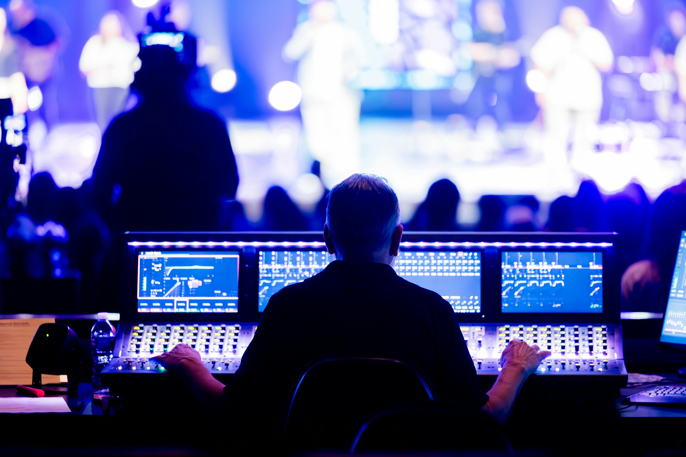

A simple toolkit for churches to improve sound, lighting, cameras, and streaming—without stress.
Download ChecklistBuild a clean, reliable livestream with simple improvements to audio, lighting, cameras, and streaming—without stress.
What you’ll get:

A simple Sunday-ready checklist to help churches achieve clean, balanced sound for livestreams and in-room audio without feedback or distortion.
Use Cases:
Learn the best camera angles for worship, preaching, and congregation shots to create a professional and engaging livestream experience.
Use Cases:
Understand basic lighting placement, brightness, and color temperature to improve video quality and skin tones on camera.
Use Cases:
Check out our media production courses that would elevate your volunteers